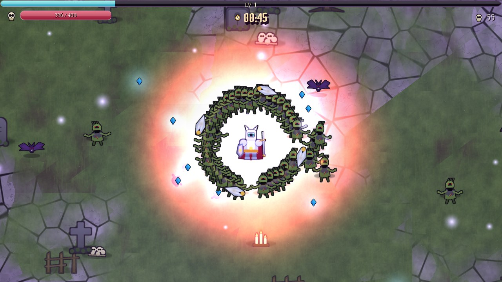
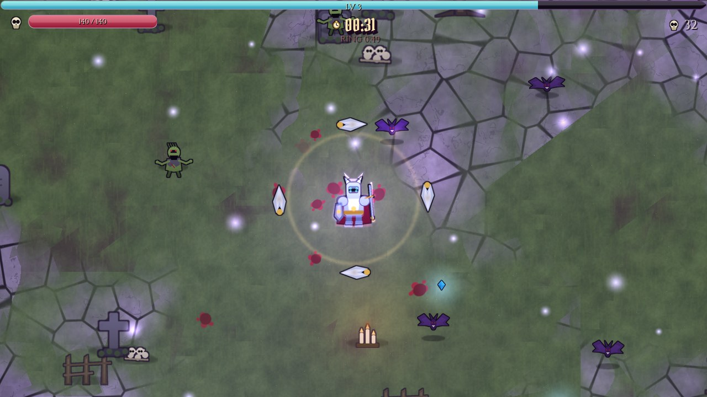
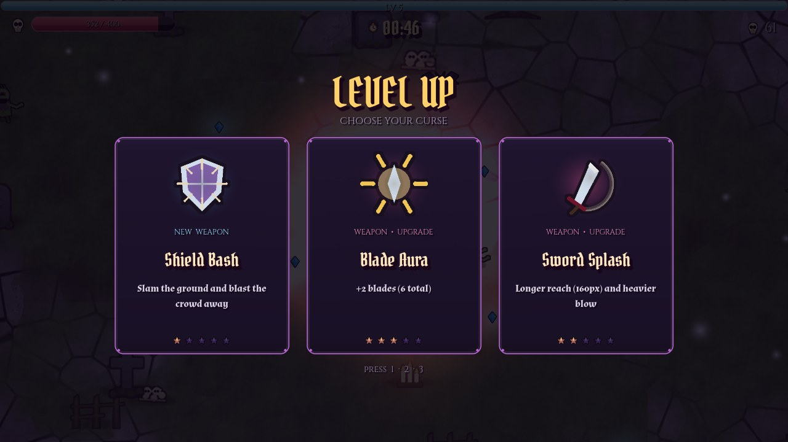
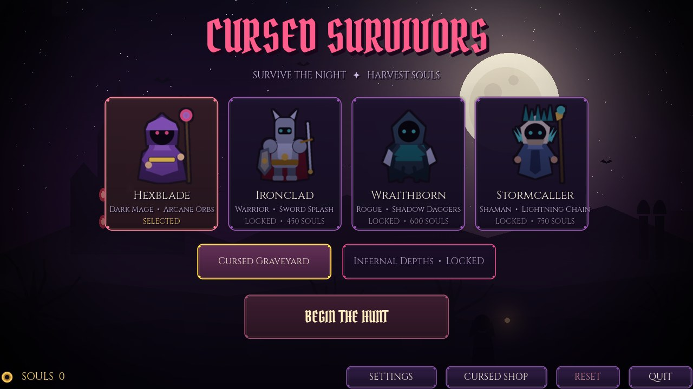
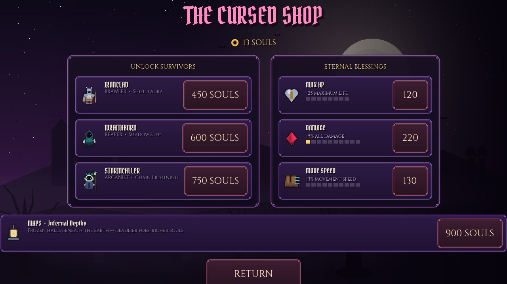

The closing ring
A wall of bodies
Every ninety seconds a ring of elites closes around you. Nothing is painted on the ground — the mobs are the wall. Cut a hole in it or outrun it before it closes.
Survive the night, harvest souls, and break the closing ring of the dead.
Four survivors, dozens of curses, two maps, and one rule: never stand still.
The closing ring
Every ninety seconds a ring of elites closes around you. Nothing is painted on the ground — the mobs are the wall. Cut a hole in it or outrun it before it closes.
Everyone has a move
Corpses lunge, ghosts chill, knights telegraph a charge, the Lich fires a bone fan. Every attack announces itself, then punishes you for ignoring it.
Class arsenals
Hexblade, Ironclad, Wraithborn and Stormcaller each pull from their own weapon branch. Max a weapon and it evolves into something worse.
Souls persist
Souls earned in a run buy permanent blessings, new survivors and a second map. Prices climb with every level, so progress has to be earned.
Made from scratch
Every sprite, backdrop, icon, track and sound effect is generated by scripts in this repository. Fonts are OFL.
Two languages
Full localisation of the interface, settings and tooltips, switchable in-game along with volume, resolution and window mode.
Shot in the game itself, no staging.

The ring has closed: the only way out is through
A normal night in the Cursed Graveyard
Pick one of three curses
Main menu
The Cursed ShopOne movement key at a time, and far too many enemies.
Requirements: Windows 10/11, 4 GB RAM, any GPU with OpenGL 3.3, about 120 MB of disk.
A single exe, no installer, no launcher. Unzip and run.
Built with Godot 4.7 and drawn entirely by code.
Sprites, tiles, icons, lighting, music and sound effects are generated by the Pillow and NumPy
scripts in this repository's tools/ folder.
Pirata One, Almendra, Cinzel, Metamorphous and Vampiro One — free fonts under the SIL Open Font License.
Godot Engine 4.7 (MIT). The game's source code is released under the MIT licence.